class: center, middle name:opening ### Discovering Relationships and their Structures Across Disparate Data Modalities Cencheng Shen, Youjin Lee, Carey E Priebe, Mauro Maggioni, [Joshua T Vogelstein](mailto:jovo@jhu.edu) <br> .center[ <!-- presented by, Joshua T. Vogelstein --> <!-- <br> --> <!-- {[bme](http://www.bme.jhu.edu/),[icm](http://icm.jhu.edu/),[cis](http://cis.jhu.edu/),[idies](http://idies.jhu.edu/),kavli,[cs](http://engineering.jhu.edu/computer-science/), [ams](http://engineering.jhu.edu/ams/), [neuro](http://neuroscience.jhu.edu/)} | [jhu](https://www.jhu.edu/) --> <br> please interrupt & ask questions: [jovo@jhu.edu](mailto:jovo at jhu dot edu)! <br> <br> <http://neurodata.io/tools/MGC/> ] --- #### Motivation <br> -- - "Understand" the relationship between physical (brain) and mental properties -- - Question 1: are the two related at all? -- - Question 2: how are they related? -- <br><br> - Note: many efforts dedicated to Q1, fewer to Q2. - We will formally address Q1, and address Q2 --- <!-- class: center, middle --> class: left #### One often desires to test for independence <br> <br> | \\(X\\) | \\(Y\\) | | :---: | :---: | | clouds | grass wetness | | brain connectivity | creativity | | brain shape | health | | CLARITY | condition | | gene expression | cancer | -- | anything | anything else | --- class: center #### Formal Definition of Independence Testing <br><br> <!-- <img src="images/setup.png" alt="Drawing" style="width: 60%;"/> --> $$(X\_i,Y\_i) \sim F\_{XY} = F\_{X|Y} F\_Y, \quad i \in \{1,\ldots,n\}$$ $$H\_0: F\_{XY} = F\_X F\_Y $$ $$H\_A: F\_{XY} \neq F\_X F\_Y $$ --- class: top, left ## Outline of Talk <br> - intuition - simulations - theory - real data - discussion --- class: middle, center # intuition --- class: top, left #### Intuitive Desiderata of Testing Procedure <br> 1. Performant under *any* joint distribution - low- and high-dimensional - Euclidean and structured data (eg, sequences, images, networks, shapes) - linear and nonlinear relationships <!-- 5. computational efficiency --> -- 6. Reveals the geometry of dependence -- Answers the two motivating questions: - Question 1: are the two related at all? - Question 2: how are they related? --- class: center ### correlation coefficient <img src="images/linear.png" alt="Drawing" style="position:absolute; TOP: 350px; LEFT: 300px; height: 300px;"/> <!-- $$ r^2 = \frac{(\sum x\_i - \bar{x}) (y\_i - \bar{y})}{\sum (x\_i - \bar{x})^2 \sum (y\_i- \bar{y})^2 } --> $$r\_{XY}^2 = \frac{(\sum\_{i=1}^n ( x\_i - \bar{x}) (y\_i - \bar{y}))^2}{\sum\_{i=1}^n (x\_i - \bar{x})^2 \sum\_{i=1}^n (y\_i- \bar{y})^2} $$ --- class: center ### **mantel** correlation coefficient <img src="images/linear.png" alt="Drawing" style="position:absolute; TOP: 350px; LEFT: 300px; height: 300px;"/> <!-- $$ r^2 = \frac{(\sum x\_i - \bar{x}) (y\_i - \bar{y})}{\sum (x\_i - \bar{x})^2 \sum (y\_i- \bar{y})^2 } --> $$r\_{XY}^2 = \frac{(\sum\_{i=1}^n ( x\_i - \bar{x}) (y\_i - \bar{y}))^2}{\sum\_{i=1}^n (x\_i - \bar{x})^2 \sum\_{i=1}^n (y\_i- \bar{y})^2} $$ <br> $$d\_{XY}^2 = \frac{(\sum\_{i,\color{red}{j}=1}^n ( x\_i - \color{red}{x\_j}) (y\_i - \color{red}{y\_j}))^2}{\sum\_{i,\color{red}{j}=1}^n (x\_i - \color{red}{x\_j})^2 \sum\_{i,\color{red}{j}=1}^n (y\_i- \color{red}{y\_j})^2} $$ --- class: center ### **generalized** correlation coefficient <!-- $$ r^2 = \frac{(\sum x\_i - \bar{x}) (y\_i - \bar{y})}{\sum (x\_i - \bar{x})^2 \sum (y\_i- \bar{y})^2 } --> $$r\_{XY}^2 = \frac{(\sum\_{i=1}^n ( x\_i - \bar{x}) (y\_i - \bar{y}))^2}{\sum\_{i=1}^n (x\_i - \bar{x})^2 \sum\_{i=1}^n (y\_i- \bar{y})^2} $$ <br> $$d\_{XY}^2 = \frac{(\sum\_{i,\color{red}{j}=1}^n ( x\_i - \color{red}{x\_j}) (y\_i - \color{red}{y\_j}))^2}{\sum\_{i,\color{red}{j}=1}^n (x\_i - \color{red}{x\_j})^2 \sum\_{i,\color{red}{j}=1}^n (y\_i- \color{red}{y\_j})^2} $$ <br> $$c\_{XY}^2 = \frac{(\sum\_{i,j=1}^n \color{red}{\sigma\_x}(x\_i,x\_j) \color{red}{\sigma\_y}(y\_i,y\_j))^2}{\sum\_{i,j=1}^n \color{red}{\sigma\_x}(x\_i,x\_j)^2 \sum\_{i,j=1}^n \color{red}{\sigma\_y}(y\_i,y\_j)^2} $$ --- class: top, left ### Our intuition - corr finds **globally** linear relationships - gcorr finds **locally** linear relationships - let's help gcorr! <img src="images/linear.png" alt="Drawing" style="position:absolute; TOP: 250px; LEFT: 100px; height: 300px;"/> 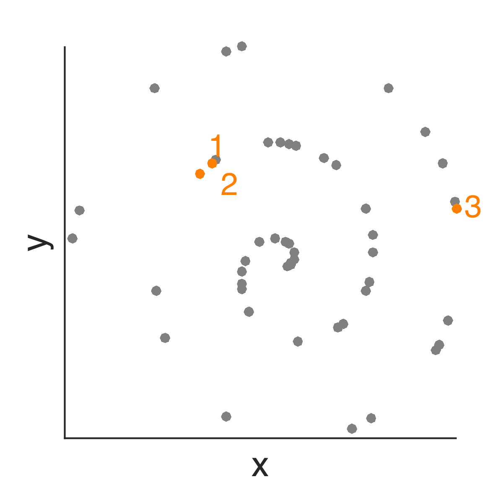 --- ### local distance correlation <img src="images/linear.png" alt="Drawing" style="position:absolute; TOP: 150px; LEFT: 100px; height: 150px;"/> -- <img src="images/Fig1B.png" alt="Drawing" style="position:absolute; TOP: 150px; LEFT: 270px; height: 150px;"/> -- <img src="images/Fig_centered1Panel2.png" alt="Drawing" style="position:absolute; TOP: 150px; LEFT: 500px; height: 150px;"/> -- <div style="position:absolute; TOP: 150px; LEFT: 680px; height: 200px;"> dcorr(X,Y)=0.15, MGC(X,Y)=0.15 </div> -- -- <img src="images/Fig8B.png" alt="Drawing" style="position:absolute; TOP: 400px; LEFT: 270px; height: 150px;"/> -- <img src="images/Fig_centered8Panel2.png" alt="Drawing" style="position:absolute; TOP: 400px; LEFT: 500px; height: 150px;"/> -- <div style="position:absolute; TOP: 400px; LEFT: 680px; height: 200px;"> dcorr(X,Y)=0.01, MGC(X,Y)= .r[0.13] </div> --- ### multiscale distance correlation - compute local dcorr **at all scales** - find scale with **max** test statistic - permutation test to determine p-value --- class: top, center ### Multiscale Generalized Correlation (MGC) <!-- <img src="https://github.com/neurodata/MGC/raw/master/Figures/FigA.png" alt="Drawing" style="width: 900px;"/> --> 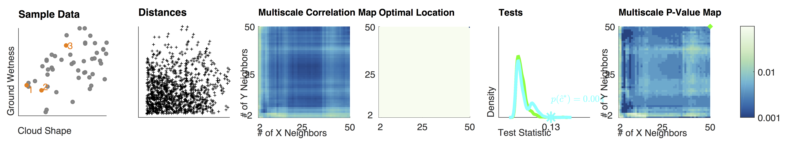 -- 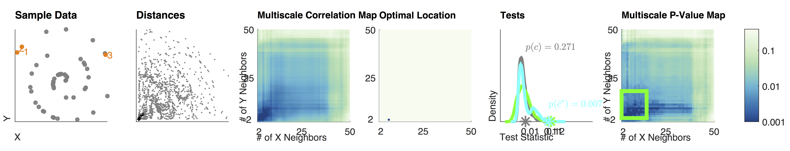 -- 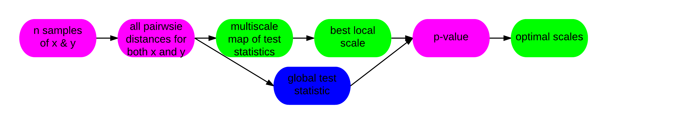 --- class: top, left #### Intuitive Desiderata of Testing Procedure <br> 1. Performant under *any* joint distribution - low- and high-dimensional - Euclidean and structured data (eg, sequences, images, networks, shapes) - linear and nonlinear relationships <!-- 5. computational efficiency --> 6. Reveals the geometry of dependence Answers the two motivating questions: - Question 1: are the two related at all? - Question 2: how are they related? --- class: middle, center # simulations --- class: top, left ### Empirical Desiderata 1. statistical efficiency - **power** is the probability of rejecting the null when the alternative is true <!-- - $\beta_n(t)$ := power of test statistic $t$ given $n$ samples --> - $N_\beta(t)$ := the # of samples required to achieve power $\beta$ using test statistic $t$ - we desire that $$N\_\beta(t') / N\_\beta( \text{MGC}) \geq 1 \text{ for all } n, \, d, \, F\_{XY}, \text{ and } t' $$ <!-- $$\beta\_n(\text{MGC}) > \beta\_n(t') \text{ for all } --> <!-- n, \, t' \in \mathcal{T}, \text{ and } F\_{XY} $$ --> 2. quantification of relationship --- class: top, center ### 20 Different Functions (1D version) 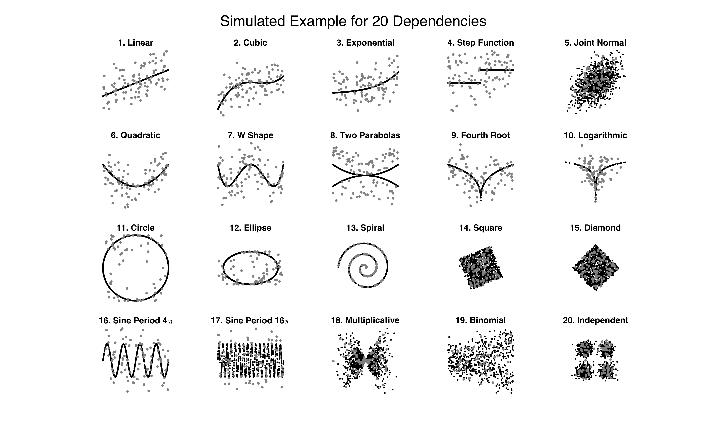 --- class: center ### MGC Outperforms Benchmarks <br><br> 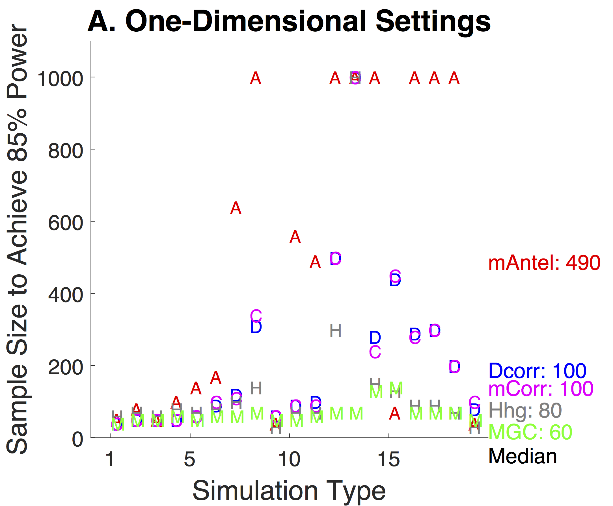 -- 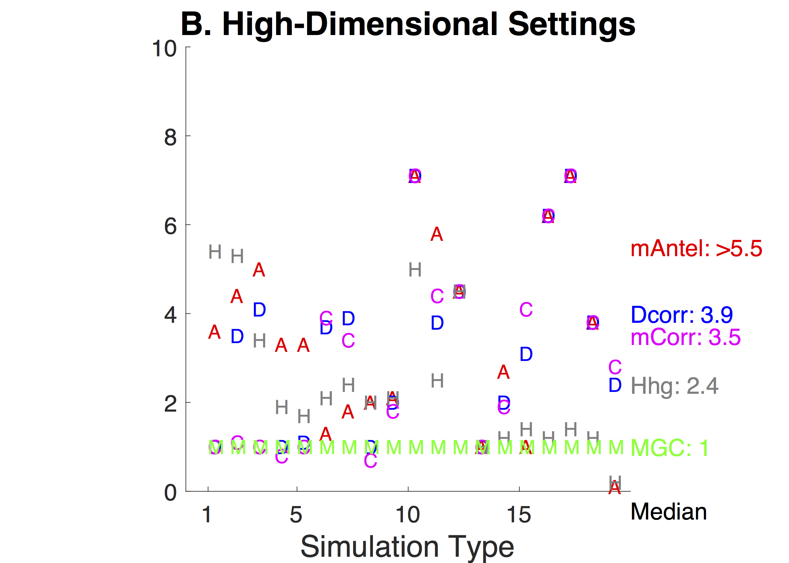 <!-- .center[ <img src="https://github.com/neurodata/MGC/raw/master/Figures/FigHDPowerMGCM.png" alt="Drawing" style="width: 900px;"/> ] --> --- class: center, middle ### MGC Reveals Structure of Dependence 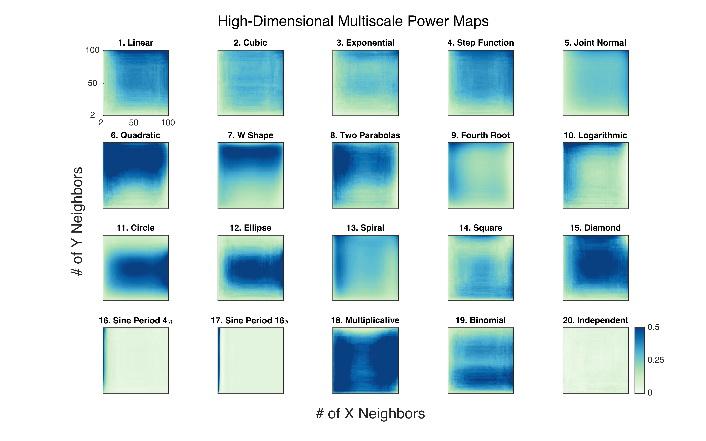 <!-- .center[ <img src="https://github.com/neurodata/MGC/raw/master/Figures/FigHDHeat.png" style="width: 900px;"/> ] --> --- class: top, left ### Empirical Desiderata <br> 1. $N\_\beta(t') / N\_\beta( \text{MGC}) \geq 1 \text{ for all } n, \, d, \, F\_{XY}, \text{ and } t' $ <!-- $$\beta\_n(\text{MGC}) > \beta\_n(t') \text{ for all } --> <!-- n, \, t' \in \mathcal{T}, \text{ and } F\_{XY} $$ --> 2. quantification of relationship --- class: middle, center # theory --- class: top, left ### Theoretical Desiderata <br> | name | principle | | --- | --- | | boundedness | $0 \leq t,T \leq 1 $| | 1-determin. | $ T= 1 \Leftrightarrow H(X \lvert Y) = 0 $ | | 0-indep. | $T=0 \Leftrightarrow H(X \lvert Y) = H(X)$ | | ortho. invar. | $T(X,Y) = T(a_1 + b_1 C_1 X, a_2 + b_2 C_2 Y)$ | -- | univ. consist. | $\beta\_n(T) \to 1, \quad \forall \, F\_{XY}$ | | dominance | $\beta\_n(T) \geq \beta\_n(T'), \, \forall n,\, T' \in \mathcal{T}, \forall F\_{XY}$ | | convergence | $\beta_n(t) \to \beta_n(T)$ as $n \to \infty$ | <!-- | efficiency | $\mathbb{E}\beta_n(t) \geq \mathbb{E}\beta_n(t'), \, \forall n, t' \in \mathcal{T}$ | --> <!-- | | comp. efficiency | $\mathcal{O}(d n^2 \log n)$ space and time | --> <!-- 9. "reveal the "geometry/topology" of the relationship" --> --- class: top, left #### MGC is a Reasonable Dependence Statistic <br> Thm: Oracle MGC has the following properties: - 0 ≥ MGC ≥ 1 - MGC = 0 only under independence - MGC = 1 only under deterministic relationship - MGC is invariant to rotation, translation, and scale of X and/or Y --- class: center ### MGC has power 1 for all F<sub>XY</sub> <!-- Thm 1: $$\beta_n(c_t^*) \rightarrow 1 \text{ as } n \to \infty$$ --> <!-- Oracle MGC is consistent whenever Global Counterpart is <br> --> <br><br> Thm: \\( \beta_n (T^*) \to 1 \\) as \\( n \to \infty \\) whenever \\( E [X] < \infty \\) <!-- --> --- class: center ### Linear: Local < Global <!-- Thm 2: If x is linearly dependent on y, then for any n it always holds that $\beta_n(c_t^*) = \beta_n(c_t)$ --> <br><br> Thm: If x is linearly dependent on y, then for any n it always holds that $$ \beta_n(T^*) = \beta_n(T) $$ <!-- 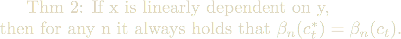 --> --- class: center ### (Certain) Nonlinear: Local > Global <br><br> Thm: There exists f and n such that $$\beta_n( T^{k,l} ) > \beta_n(T) $$ <!-- 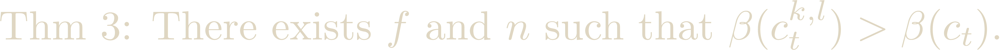 --> --- class: center ### MGC > Dcorr <br><br> Thm: Oracle MGC statistically dominates dcorr, that is, $$\beta_n( T^* ) \geq \beta_n(T) $$ <!-- --> --- class: center ### Sample MGC Converges <br> Thm: For any F<sub>XY</sub> with finite 1st moment, $\beta_n(t^*) \to \beta_n(T^\ast)$ as $n \to \infty$ if and only if $\sigma_X$ and $\sigma_Y$ are of strong negative type --- class: top, left ### Theoretical Desiderata <br> | name | principle | | --- | --- | | boundedness | $0 \leq t,T \leq 1 $| | 1-determin. | $ T= 1 \Leftrightarrow H(X \lvert Y) = 0 $ | | 0-indep. | $T=0 \Leftrightarrow H(X \lvert Y) = H(X)$ | | ortho. invar. | $T(X,Y) = T(a_1 + b_1 C_1 X, a_2 + b_2 C_2 Y)$ | | univ. consist. | $\beta\_n(T) \to 1, \quad \forall \, F\_{XY}$ | | dominance | $\beta\_n(T) \geq \beta\_n(T'), \, \forall n,\, T' \in \mathcal{T}, \forall F\_{XY}$ | | convergence | $\beta_n(t) \to \beta_n(T)$ as $n \to \infty$ | --- class: middle, center # real data --- class: top, left ### Real Data Desiderata <br> 1. when we believe dependence, MGC obtains a small p-value 2. MGC provides insight into the geometry of real dependence 3. when there is no dependence, MGC correcly controls FPR --- class: top, left ### MGC Discovers Relationships between Brain & Mental Properties <br><br> 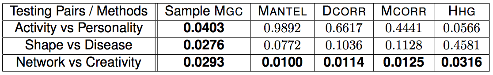 --- class: center, middle ### MGC Reveals Structure of Real Data <img src="images/FigReal.png" style="width: 880px;"/> --- ### Overall Summary - Oracle MGC theoretically dominates, even in finite samples - MGC empirically nearly dominates on extensive simulations - Visual quantitative characterization of arbitrary relationships - MGC reveals geometry of dependence in real data <br> - MGC mitigate "post selection inference" problems --- ### Next Steps <br><br> - 2-sample test, effect size - Make R package from open source code (on github now) - Scale up for larger n --- class: middle, center ## Questions? <br> e: [jovo@jhu.edu](mailto:jovo@jhu.edu) <br> w: [neurodata.io/tools/MGC/](http://neurodata.io/tools/MGC/) <img src="http://brainx.io/images/funding/nsf_fpo.png" STYLE="position:absolute; TOP:550px; LEFT:10px; HEIGHT:100px;"/> <img src="http://brainx.io/images/funding/nih_fpo.png" STYLE="position:absolute; TOP:550px; LEFT:120px; HEIGHT:100px;"/> <img src="http://brainx.io/images/funding/darpa_fpo.png" STYLE="position:absolute; TOP:550px; LEFT:230px; HEIGHT:100px;"/> <img src="http://brainx.io/images/funding/iarpa_fpo.jpg" STYLE="position:absolute; TOP:550px; LEFT:430px; HEIGHT:100px;"/> <img src="http://brainx.io/images/funding/kavli_fpo.png" STYLE="position:absolute; TOP:550px; LEFT:550px; HEIGHT:100px;"/> <img src="http://brainx.io/images/funding/kndi_fpo.png" STYLE="position:absolute; TOP:550px; LEFT:650px; HEIGHT:100px;"/> --- ### Computational Desiderata 1. fast 2. open source <br> | Method | Complexity | | :---: | :---: | | Dcorr | n<sup>2</sup> | | HHG | n<sup>2</sup> log n | | MGC | n<sup>2</sup> log n / T | - MATLAB and R code at [http://neurodata.io/tools/MGC/](http://neurodata.io/tools/MGC/) --- ### 1D Power All <img src="https://github.com/neurodata/MGC/raw/master/Figures/Fig1DPowerAll.png" alt="Drawing" style="width: 800px;"/> --- ### HD Power All <img src="https://github.com/neurodata/MGC/raw/master/Figures/FigHDPowerAll.png" alt="Drawing" style="width: 800px;"/> --- ### 1D Heat <img src="https://github.com/neurodata/MGC/raw/master/Figures/Fig1DHeat.png" alt="Drawing" style="width: 800px;"/>